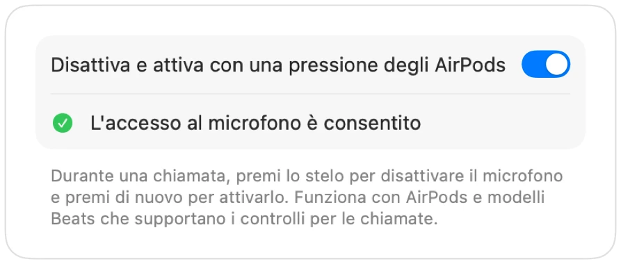

Come disattivare Google Meet con gli AirPods su Mac
Su iPhone, premere lo stelo degli AirPods disattiva l'audio in chiamata. Su Mac, Google Meet funziona in Chrome, e Chrome non trasmette questo gesto alle pagine web. Premi, senti un suono di errore e Meet continua a trasmettere la tua voce.
Muffle risolve questo problema per ogni riunione su Meet. Riceve direttamente la pressione degli AirPods e disattiva il microfono del tuo Mac, così Meet riceve solo silenzio anche se la scheda è in secondo piano.
Disattiva Google Meet con i tuoi AirPods
- 1
Installa Muffle e consenti l'accesso al microfono quando richiesto.
- 2
Partecipa alla tua videochiamata su Google Meet in Chrome, Safari, Arc o Edge.
- 3
Premi una volta lo stelo degli AirPods per disattivare il microfono. L'icona di Muffle diventa rossa.
- 4
Premi di nuovo per riattivarlo. Puoi anche premere Control-Opzione-M da qualsiasi app.

- Meet potrebbe mostrare il microfono ancora attivo, perché Muffle disattiva il microfono a livello di sistema e non il pulsante di Meet. Tutti sentono silenzio finché l'icona di Muffle è rossa.
- Attiva “Avvia ogni chiamata da muto” per entrare in ogni riunione su Meet con il microfono disattivato.
Domande frequenti
Perché premere gli AirPods non disattiva Google Meet?
Chrome non supporta il gesto di disattivazione degli AirPods di macOS per le chiamate web, quindi macOS non sa a quale app inviare il comando. Muffle diventa quell'app.
La scorciatoia di Meet non è sufficiente?
La scorciatoia Comando-D di Meet funziona solo se la scheda di Meet è in primo piano. La scorciatoia di Muffle e la pressione degli AirPods funzionano da qualsiasi app.